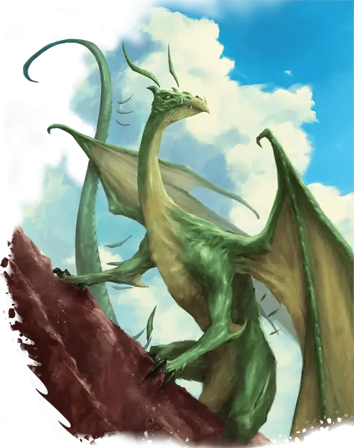

Вирмлинг изумрудного дракона
Emerald Dragon Wyrmling
Средний Дракон (Самоцветный), законно-нейтральный

Класс Доспеха 16 (природный доспех)
Хиты 39 (6к8 + 12)
Скорость 30 футов, летая 60 футов, копая 20 футов
| мод | спас | ||
|---|---|---|---|
| СИЛ | 15 | +2 | +2 |
| ЛОВ | 12 | +1 | +3 |
| ТЕЛ | 15 | +2 | +4 |
| мод | спас | ||
|---|---|---|---|
| ИНТ | 14 | +2 | +2 |
| МДР | 12 | +1 | +3 |
| ХАР | 14 | +2 | +4 |
Навыки Восприятие +5, Магия +4, Обман +4, Скрытность +3
Сопротивление урону огонь, психическая энергия
Чувства слепое зрение 10 футов, тёмное зрение 60 футов, пассивное Восприятие 15
Языки Драконий, Телепатия 120 фт.
Опасность 2 (450 опыта)
Бонус мастерства +2
Особенности
Прокладывание туннеля. Дракон может копать сквозь сплошной камень со скоростью копания, уменьшенной вдвое, оставляя за собой туннель диаметром 10 фт.
Персонализация дракона. Как уже говорилось в «Руководстве Мастера», вы можете настроить блок статистики любого дракона, чтобы отразить его уникальный характер. Незначительные изменения, такие как приведенные ниже, легко сделать, и они не влияют на ПО дракона. (Fizban's Treasury of Dragons)
Языки. Большинство драконов предпочитают говорить на Драконьем, но для общения с союзниками и приспешниками изучают Общий. Но, учитывая высокий Интеллект и продолжительный срок жизни, драконы могут легко выучить дополнительные языки. Вы можете добавить языки в блок статистики дракона.
Навыки. Большинство драконов владеют навыками Восприятие и Скрытность, а многие драконы владеют дополнительными навыками. Как и в случае с языками, вы можете изменить список навыков дракона (даже удвоить бонус мастерства), чтобы отразить его интересы и занятия. Вы также можете наделить дракона владениями инструментами, особенно если дракон проводит время в гуманоидной форме.
Другие черты и действия. Вы можете заимствовать черты и действия у других монстров, чтобы придать дракону уникальную изюминку. Рассмотрим эти примеры:
Изменение формы. Вы можете решить, что дракон приобретает это действие в более раннем возрасте, чем обычно, особенно если вы хотите представить в своей кампании дракона в гуманоидной форме. (См. металлические драконы).
Поглощение урона. Вы можете решить, что красный или золотой дракон не только не получает урон от огня, но и исцеляется от него. (См. мясной голем [flesh golem]).
Облёт. Дракон - проворный летун, быстро вылетающий из зоны досягаемости врагов. (См. перитон [peryton]).
Подражание. Изображение персонажей или их союзников может стать забавным трюком для хитрого дракона. (См. кенку [kenku]).
Омоложение. Вы можете решить, что драконы в вашей кампании, будучи неотъемлемой частью Материального плана, почти невозможно уничтожить. Жизненная сущность дракона может храниться в яйце, из которого он появился на свет, в его кладе или в пещерном зале в центре мира, так же как сущность лича спрятана в филактерии. (См. лич [lich]).
Особые чувства. У большинства драконов есть слепое зрение и темное зрение. Вы можете улучшить зрение до истинного зрения или наделить дракона скоростью рытья или чувством вибрации. (См. зрение и свет).
Прокладывание туннеля. Эта особенность может быть присуща любому дракону, обладающему скоростью копания - он может двигаться сквозь твёрдую породу, оставляя за собой туннель. (См. бурый увалень [umber hulk]).
Действия
Укус. . Рукопашная атака оружием: +4 к попаданию, досягаемость 10 фт., одна цель. Попадание: 7 (1к10+2) колющего урона плюс 3 (1к6) урона психической энергией
Использование заклинаний (Псионика). Дракон накладывает одно из следующих заклинаний, не требуя компонентов заклинаний и используя Интеллект в качестве базовой характеристики (Сл спасброска от заклинания 12):
• Неограниченно: малая иллюзия [minor illusion], волшебная рука [mage hand] (волшебная рука невидима);
Дезориентирующее дыхание (перезарядка 5-6). Дракон выдыхает волну психического диссонанса 15-футовом конусом. Все существа в этой области должны совершить спасбросок Интеллекта Сл 12. В случае провала, существо получает 17 (5к6) урона психической энергией и до конца следующего хода, когда существо совершает бросок атаки или проверку характеристики, дополнительно бросает 1к4, вычитая его результат. В случае успеха существо получает половину урона без дополнительных эффектов.
Описание
Изумрудные драконы - самые любопытные, хитрые и манипулятивные из самоцветных драконов, они используют иллюзии созданные псионической силой для обмана и дезориентации. Они скрывают свое присутствие, чтобы наблюдать за другими существами, не будучи обнаруженными, и собирают информацию обо всем - от местных культурных обычаев до сверхъестественных явлений.
Мерцающий зеленый. Чешуя вирмлинга изумрудного дракона имеет тусклый, бледно-зеленый цвет, но с возрастом она приобретает все более насыщенные и разнообразные оттенки зеленого. В конце концов, чешуя становится полупрозрачной и переливается на свету, пульсируя при движении дракона. Рога и шипы дракона парят над телом, двигаясь и смещаясь вдоль спины и хвоста, отражая настроение дракона.
Умная маскировка. Самые застенчивые из самоцветных драконов, изумрудные также и самые любопытные. Они любят наблюдать за местными поселениями и народами, используя свои псионические способности, чтобы скрывать себя и наблюдать издалека. Когда изумрудный дракон становится достаточно взрослым, он может принять облик существа, способного слиться с местным населением или хотя бы приблизиться к нему, не вызывая подозрений. Оказавшись достаточно близко, дракон изучает повседневную жизнь местных жителей, проявляя живой интерес к любым магическим явлениям.
Внимательное отношение изумрудных драконов к необычным событиям делает их особенно полезными для их сапфировых собратьев, которые охотятся за Аберрациями и ищут доказательства вторжения существ Дальнего предела на Материальный план. Эти виды драконов часто работают вместе: изумрудные драконы выслеживают источник вторжения, а сапфировые драконы планируют и проводят решительную чистку - или вербуют агентов, чтобы те сделали это за них.
Изумрудные драконы, предпочитающие вулканические логова, часто вступают в конфликт с огненными гигантами. Несмотря на нежелание открываться незнакомцам, изумрудные драконы могут подходить к опытным искателям приключений в надежде натравить их на соперников огненных гигантов.
Сохраненные истории. Изумрудные драконы ценят знания, особенно местные истории, посвященные магическим событиям и личностям. Обычно они знают о местах силы вблизи своих логовищ и ведут подробные записи о том, как явления, связанные с этими местами, реагируют на внешние воздействия. Они также охотно собирают магические предметы и заклинания, создающие иллюзии, что позволяет им лучше скрывать свои сокровища от посторонних глаз и заклинаний.
Раулотим
Раулотим - древний изумрудный дракон, обитающий в потухшем вулкане, известном как Яма Звезд, на самом северном острове Руатим у Побережья Мечей Фаэруна. Хотя большинство изумрудных драконов по своей природе параноики, Раулотим стал таким особенно после того, как стал свидетелем прибытия в Фаэрун планетарных путешественников. Опасаясь неизбежного вторжения межпланетных армий в его мир, он провел последнее столетие, собирая магические предметы, которые, как он надеется, позволят ему пережить грядущий конфликт.
Стремление Раулотима к накоплению волшебства и его врожденное недоверие ко всем, кто достаточно силен, чтобы потенциально угрожать ему, делают дракона опасным противником. Однако он знает, что самый надежный способ уберечь Фаэрун от планетарных захватчиков - это тщательно следить за всеми планетарными порталами, а для этого он должен опираться на союзников. Поэтому Раулотим готов вести переговоры с авантюристами, готовыми помочь в этом деле, но только с теми, в ком он уверен, что может доверять. Не раз сомнения грызли разум Раулотима, побуждая его нанести упреждающий удар по ранее надежному союзнику.